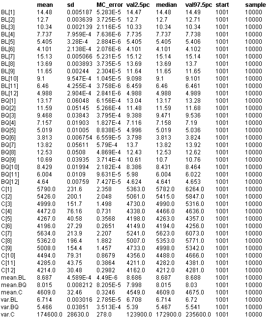

![[hips30]](hips30.bmp) Hips model 3: MC estimates for
Hips model 3: MC estimates foreach strata, allowing
for parameter uncertainty in
revision hazard, h - gives
results for Table 3
Spiegelhalter, D.J. and Best, N.G. “Bayesian approaches to multiple sources of evidence and uncertainty in complex cost-effectiveness modelling”. Statistics in Medicine 22 , (2003), 3687-3709.
n = 10000 updates (1 per simulated set of parameter values) are required for this model; monitor C, BL, BQ to get posterior mean and sd for each subgroup for results in top part of Table 3.
For results in bottom part of Table 3:
Approach 1: p(s, theta) = p(s | theta) p(theta)
m_theta and v_theta are the mean and variance across subgroups for a given value of theta
=> within BUGS code, calculate mean and variance of C[k], BL[k], BQ[k] across subgroups at each iteration, then take Monte Carlo expectation at end of run
=> monitor mean.C, mean.BL, mean.BQ, var.C, var.BL, var.BQ
Approach 2: p(s, theta) = p(theta | s) p(s)
overall mean, m = weighted mean of posterior means of C[k], BL[k], BQ[k] => calculate after BUGS run var due to uncertainty, vP2 = weighted mean of posterior variances of C[k], BL[k], BQ[k] => calculate after BUGS run var due to heterogeneity = vH2 = weighted variance of posterior means of C[k], BL[k], BQ[k] => calculate after BUGS run
Sections of the code that have changed from Model 1 are shown in bold
model {
for(k in 1 : K) { # loop over strata
# Cost and benefit equations
#######################
# Costs
for(t in 1 : N) {
ct[k, t] <- inprod(pi[k, t, ], c[]) / pow(1 + delta.c, t - 1)
}
C[k] <- C0 + sum(ct[k, ])
# Benefits - life expectancy
for(t in 1 : N) {
blt[k, t] <- inprod(pi[k, t, ], bl[]) / pow(1 + delta.b, t - 1)
}
BL[k] <- sum(blt[k, ])
# Benefits - QALYs
for(t in 1 : N) {
bqt[k, t] <- inprod(pi[k, t, ], bq[]) / pow(1 + delta.b, t - 1)
}
BQ[k] <- sum(bqt[k, ])
# Markov model probabilities:
#######################
# Transition matrix
for(t in 2 : N) {
Lambda[k, t, 1, 1] <- 1 - gamma[k, t] - lambda[k, t]
Lambda[k, t, 1, 2] <- gamma[k, t] * lambda.op
Lambda[k, t, 1, 3] <- gamma[k, t] *(1 - lambda.op)
Lambda[k, t, 1, 4] <- 0
Lambda[k, t, 1, 5] <- lambda[k, t]
Lambda[k, t, 2, 1] <- 0
Lambda[k, t, 2, 2] <- 0
Lambda[k, t, 2, 3] <- 0
Lambda[k, t, 2, 4] <- 0
Lambda[k, t, 2, 5] <- 1
Lambda[k, t, 3, 1] <- 0
Lambda[k, t, 3, 2] <- 0
Lambda[k,t,3,3] <- 0
Lambda[k, t, 3, 4] <- 1 - lambda[k, t]
Lambda[k, t, 3, 5] <- lambda[k, t]
Lambda[k, t, 4, 1] <- 0
Lambda[k, t, 4, 2] <- rho * lambda.op
Lambda[k,t,4,3] <- rho * (1 - lambda.op)
Lambda[k, t, 4, 4] <- 1 - rho - lambda[k, t]
Lambda[k, t, 4, 5] <- lambda[k, t]
Lambda[k, t, 5, 1] <- 0
Lambda[k, t, 5, 2] <- 0
Lambda[k, t, 5, 3] <- 0
Lambda[k, t, 5, 4] <- 0
Lambda[k, t, 5,5 ] <- 1
gamma[k, t] <- h[k] * (t - 1)
}
# Marginal probability of being in each state at time 1
pi[k,1,1] <- 1 - lambda.op pi[k,1, 2] <- 0 pi[k,1, 3] <- 0 ;
pi[k,1, 4] <- 0 pi[k,1, 5] <- lambda.op
# Marginal probability of being in each state at time t > 1
for(t in 2 : N) {
for(s in 1 : S) {
pi[k, t, s] <- inprod(pi[k, t - 1, ], Lambda[k, t, , s])
}
}
}
# age-sex specific revision hazard
for(k in 1 : K) {
logh[k] ~ dnorm(logh0[k], tau)
h[k] <- exp(logh[k])
}
# Calculate mean and variance across strata at each iteration
# (Gives overall mean and variance using approach 1)
mean.C <- inprod(p.strata[], C[])
mean.BL <- inprod(p.strata[], BL[])
mean.BQ <- inprod(p.strata[], BQ[])
for(k in 1:12) {
C.dev[k] <- pow(C[k]-mean.C , 2)
BL.dev[k] <- pow(BL[k]-mean.BL , 2)
BQ.dev[k] <- pow(BQ[k]-mean.BQ , 2)
}
var.C <- inprod(p.strata[], C.dev[])
var.BL <- inprod(p.strata[], BL.dev[])
var.BQ <- inprod(p.strata[], BQ.dev[])
}
Data ( click to open )
Results

Note: results for the bottom panel of Table 3 (approach 1) for costs are given by
m = posterior mean of mean.C = 4609
vP1 = posterior variance of mean.C = 31.82 * 31.82
vH1 = posterior mean of var.C = 174400
'Model' to calculate overall mean (m), var due to uncertainty (vP2) and var due to heterogeneity (vH2) using approach 2
No updates needed - just compile model, load data, and gen inits, then use node tool from info menu to obtain values of mC, mBL, mBQ, vP2.C, vP2.BL, vP2.BQ, vH2.C, vH2.BL, vH2.BQ, TC, TBL, TBQ, pcC, pcBL, pcBQ.
model {
# overall mean outcome (m)
mC <- inprod(p.strata[], C[])
mBL <- inprod(p.strata[], BL[])
mBQ <- inprod(p.strata[], BQ[])
# variance due to uncertainty, vP
for(k in 1:12) {
VC[k] <- sdC[k]*sdC[k]
VBL[k] <- sdBL[k]*sdBL[k]
VBQ[k] <- sdBQ[k]*sdBQ[k]
}
vP2.C <- inprod(p.strata[], VC[])
vP2.BL <- inprod(p.strata[], VBL[])
vP2.BQ <- inprod(p.strata[], VBQ[])
# variance due to heterogeneity, vH
for(k in 1:12) { devC[k] <- pow(C[k] - mC, 2) }
vH2.C <- inprod(p.strata[], devC[])
for(k in 1:12) { devBL[k] <- pow(BL[k] - mBL, 2) }
vH2.BL <- inprod(p.strata[], devBL[])
for(k in 1:12) { devBQ[k] <- pow(BQ[k] - mBQ, 2) }
vH2.BQ <- inprod(p.strata[], devBQ[])
# Percent of total variance due to heterogeneity
TC <- vP2.C + vH2.C
pcC <- vH2.C/TC
TBL <- vP2.BL + vH2.BL
pcBL <- vH2.BL/TBL
TBQ <- vP2.BQ + vH2.BQ
pcBQ <- vH2.BQ/TBQ
}
Data ( click to open, posterior means and posterior sd of C, BL and BQ from running model 3)
Results
mC 4609.03
mBL 8.687390000000001
mBQ 8.01488
vP2.C 11472.793425
vP2.BL 3.3068250474E-6
vP2.BQ 7.493649773900001E-4
vH2.C 163953.4291
vH2.BL 6.713258897899999
vH2.BQ 5.464389485600001
TC 175426.222525
TBL 6.713262204725046
TBQ 5.465138850577391
pcC 0.9346004647431485
pcBL 0.999999507419054
pcBQ 0.9998628827193821